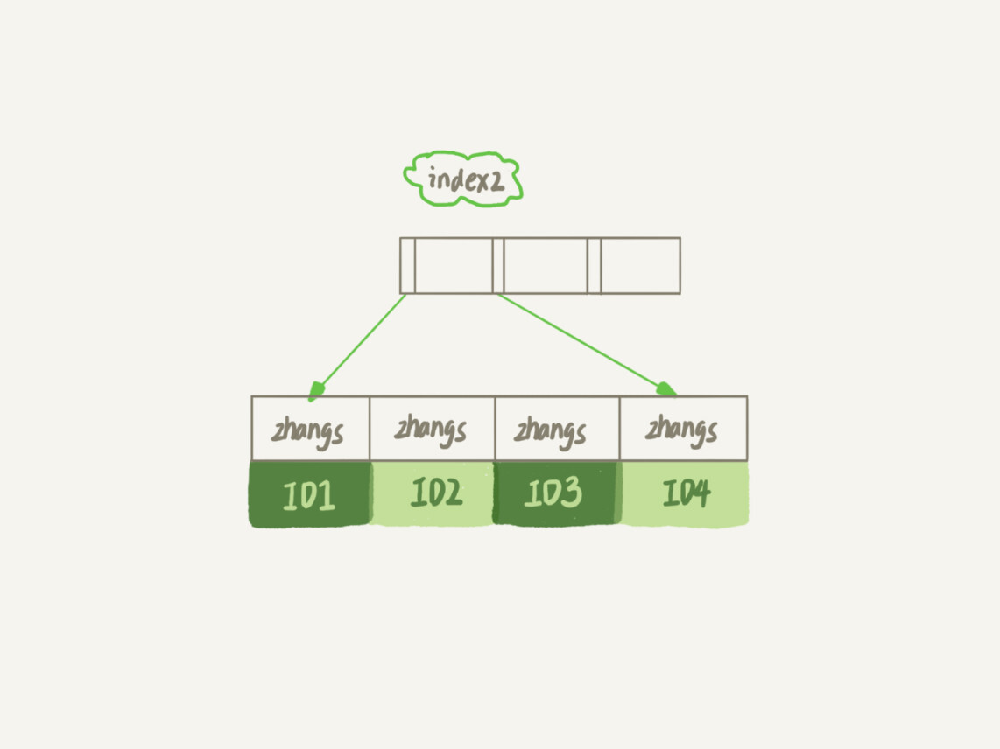

- 00 开篇词 这一次，让我们一起来搞懂MySQL.md.html
- 01 基础架构：一条SQL查询语句是如何执行的？.md.html
- 02 日志系统：一条SQL更新语句是如何执行的？.md.html
- 03 事务隔离：为什么你改了我还看不见？.md.html
- 04 深入浅出索引（上）.md.html
- 05 深入浅出索引（下）.md.html
- 06 全局锁和表锁 ：给表加个字段怎么有这么多阻碍？.md.html
- 07 行锁功过：怎么减少行锁对性能的影响？.md.html
- 08 事务到底是隔离的还是不隔离的？.md.html
- 09 普通索引和唯一索引，应该怎么选择？.md.html
- 10 MySQL为什么有时候会选错索引？.md.html
- 11 怎么给字符串字段加索引？.md.html
- 12 为什么我的MySQL会“抖”一下？.md.html
- 13 为什么表数据删掉一半，表文件大小不变？.md.html
- 14 count()这么慢，我该怎么办？.md.html
- 15 答疑文章（一）：日志和索引相关问题.md.html
- 16 “order by”是怎么工作的？.md.html
- 17 如何正确地显示随机消息？.md.html
- 18 为什么这些SQL语句逻辑相同，性能却差异巨大？.md.html
- 19 为什么我只查一行的语句，也执行这么慢？.md.html
- 20 幻读是什么，幻读有什么问题？.md.html
- 21 为什么我只改一行的语句，锁这么多？.md.html
- 22 MySQL有哪些“饮鸩止渴”提高性能的方法？.md.html
- 23 MySQL是怎么保证数据不丢的？.md.html
- 24 MySQL是怎么保证主备一致的？.md.html
- 25 MySQL是怎么保证高可用的？.md.html
- 26 备库为什么会延迟好几个小时？.md.html
- 27 主库出问题了，从库怎么办？.md.html
- 28 读写分离有哪些坑？.md.html
- 29 如何判断一个数据库是不是出问题了？.md.html
- 30 答疑文章（二）：用动态的观点看加锁.md.html
- 31 误删数据后除了跑路，还能怎么办？.md.html
- 32 为什么还有kill不掉的语句？.md.html
- 33 我查这么多数据，会不会把数据库内存打爆？.md.html
- 34 到底可不可以使用join？.md.html
- 35 join语句怎么优化？.md.html
- 36 为什么临时表可以重名？.md.html
- 37 什么时候会使用内部临时表？.md.html
- 38 都说InnoDB好，那还要不要使用Memory引擎？.md.html
- 39 自增主键为什么不是连续的？.md.html
- 40 insert语句的锁为什么这么多？.md.html
- 41 怎么最快地复制一张表？.md.html
- 42 grant之后要跟着flush privileges吗？.md.html
- 43 要不要使用分区表？.md.html
- 44 答疑文章（三）：说一说这些好问题.md.html
- 45 自增id用完怎么办？.md.html
- 我的MySQL心路历程.md.html
- 结束语 点线网面，一起构建MySQL知识网络.md.html
- 捐赠
11 怎么给字符串字段加索引？
现在，几乎所有的系统都支持邮箱登录，如何在邮箱这样的字段上建立合理的索引，是我们今天要讨论的问题。
假设，你现在维护一个支持邮箱登录的系统，用户表是这么定义的：
mysql> create table SUser(
ID bigint unsigned primary key,
email varchar(64),
...
)engine=innodb;
由于要使用邮箱登录，所以业务代码中一定会出现类似于这样的语句：
mysql> select f1, f2 from SUser where email='xxx';
从第 4 和第 5 篇讲解索引的文章中，我们可以知道，如果 email 这个字段上没有索引，那么这个语句就只能做全表扫描。
同时，MySQL 是支持前缀索引的，也就是说，你可以定义字符串的一部分作为索引。默认地，如果你创建索引的语句不指定前缀长度，那么索引就会包含整个字符串。
比如，这两个在 email 字段上创建索引的语句：
mysql> alter table SUser add index index1(email);
或
mysql> alter table SUser add index index2(email(6));
第一个语句创建的 index1 索引里面，包含了每个记录的整个字符串；而第二个语句创建的 index2 索引里面，对于每个记录都是只取前 6 个字节。
那么，这两种不同的定义在数据结构和存储上有什么区别呢？如图 2 和 3 所示，就是这两个索引的示意图。

图 1 email 索引结构

图 2 email(6) 索引结构
从图中你可以看到，由于 email(6) 这个索引结构中每个邮箱字段都只取前 6 个字节（即：zhangs），所以占用的空间会更小，这就是使用前缀索引的优势。
但，这同时带来的损失是，可能会增加额外的记录扫描次数。
接下来，我们再看看下面这个语句，在这两个索引定义下分别是怎么执行的。
select id,name,email from SUser where email='[email protected]';
如果使用的是 index1（即 email 整个字符串的索引结构），执行顺序是这样的：
- 从 index1 索引树找到满足索引值是’[email protected]’的这条记录，取得 ID2 的值；
- 到主键上查到主键值是 ID2 的行，判断 email 的值是正确的，将这行记录加入结果集；
- 取 index1 索引树上刚刚查到的位置的下一条记录，发现已经不满足 email=‘[email protected]’的条件了，循环结束。
这个过程中，只需要回主键索引取一次数据，所以系统认为只扫描了一行。
如果使用的是 index2（即 email(6) 索引结构），执行顺序是这样的：
- 从 index2 索引树找到满足索引值是’zhangs’的记录，找到的第一个是 ID1；
- 到主键上查到主键值是 ID1 的行，判断出 email 的值不是’[email protected]’，这行记录丢弃；
- 取 index2 上刚刚查到的位置的下一条记录，发现仍然是’zhangs’，取出 ID2，再到 ID 索引上取整行然后判断，这次值对了，将这行记录加入结果集；
- 重复上一步，直到在 idxe2 上取到的值不是’zhangs’时，循环结束。
在这个过程中，要回主键索引取 4 次数据，也就是扫描了 4 行。
通过这个对比，你很容易就可以发现，使用前缀索引后，可能会导致查询语句读数据的次数变多。
但是，对于这个查询语句来说，如果你定义的 index2 不是 email(6) 而是 email(7），也就是说取 email 字段的前 7 个字节来构建索引的话，即满足前缀’zhangss’的记录只有一个，也能够直接查到 ID2，只扫描一行就结束了。
也就是说使用前缀索引，定义好长度，就可以做到既节省空间，又不用额外增加太多的查询成本。
于是，你就有个问题：当要给字符串创建前缀索引时，有什么方法能够确定我应该使用多长的前缀呢？
实际上，我们在建立索引时关注的是区分度，区分度越高越好。因为区分度越高，意味着重复的键值越少。因此，我们可以通过统计索引上有多少个不同的值来判断要使用多长的前缀。
首先，你可以使用下面这个语句，算出这个列上有多少个不同的值：
mysql> select count(distinct email) as L from SUser;
然后，依次选取不同长度的前缀来看这个值，比如我们要看一下 4~7 个字节的前缀索引，可以用这个语句：
mysql> select
count(distinct left(email,4)）as L4,
count(distinct left(email,5)）as L5,
count(distinct left(email,6)）as L6,
count(distinct left(email,7)）as L7,
from SUser;
当然，使用前缀索引很可能会损失区分度，所以你需要预先设定一个可以接受的损失比例，比如 5%。然后，在返回的 L4~L7 中，找出不小于 L * 95% 的值，假设这里 L6、L7 都满足，你就可以选择前缀长度为 6。
前缀索引对覆盖索引的影响
前面我们说了使用前缀索引可能会增加扫描行数，这会影响到性能。其实，前缀索引的影响不止如此，我们再看一下另外一个场景。
你先来看看这个 SQL 语句：
select id,email from SUser where email='[email protected]';
与前面例子中的 SQL 语句
select id,name,email from SUser where email='[email protected]';
相比，这个语句只要求返回 id 和 email 字段。
所以，如果使用 index1（即 email 整个字符串的索引结构）的话，可以利用覆盖索引，从 index1 查到结果后直接就返回了，不需要回到 ID 索引再去查一次。而如果使用 index2（即 email(6) 索引结构）的话，就不得不回到 ID 索引再去判断 email 字段的值。
即使你将 index2 的定义修改为 email(18) 的前缀索引，这时候虽然 index2 已经包含了所有的信息，但 InnoDB 还是要回到 id 索引再查一下，因为系统并不确定前缀索引的定义是否截断了完整信息。
也就是说，使用前缀索引就用不上覆盖索引对查询性能的优化了，这也是你在选择是否使用前缀索引时需要考虑的一个因素。
其他方式
对于类似于邮箱这样的字段来说，使用前缀索引的效果可能还不错。但是，遇到前缀的区分度不够好的情况时，我们要怎么办呢？
比如，我们国家的身份证号，一共 18 位，其中前 6 位是地址码，所以同一个县的人的身份证号前 6 位一般会是相同的。
假设你维护的数据库是一个市的公民信息系统，这时候如果对身份证号做长度为 6 的前缀索引的话，这个索引的区分度就非常低了。
按照我们前面说的方法，可能你需要创建长度为 12 以上的前缀索引，才能够满足区分度要求。
但是，索引选取的越长，占用的磁盘空间就越大，相同的数据页能放下的索引值就越少，搜索的效率也就会越低。
那么，如果我们能够确定业务需求里面只有按照身份证进行等值查询的需求，还有没有别的处理方法呢？这种方法，既可以占用更小的空间，也能达到相同的查询效率。
答案是，有的。
第一种方式是使用倒序存储。如果你存储身份证号的时候把它倒过来存，每次查询的时候，你可以这么写：
mysql> select field_list from t where id_card = reverse('input_id_card_string');
由于身份证号的最后 6 位没有地址码这样的重复逻辑，所以最后这 6 位很可能就提供了足够的区分度。当然了，实践中你不要忘记使用 count(distinct) 方法去做个验证。
第二种方式是使用 hash 字段。你可以在表上再创建一个整数字段，来保存身份证的校验码，同时在这个字段上创建索引。
mysql> alter table t add id_card_crc int unsigned, add index(id_card_crc);
然后每次插入新记录的时候，都同时用 crc32() 这个函数得到校验码填到这个新字段。由于校验码可能存在冲突，也就是说两个不同的身份证号通过 crc32() 函数得到的结果可能是相同的，所以你的查询语句 where 部分要判断 id_card 的值是否精确相同。
mysql> select field_list from t where id_card_crc=crc32('input_id_card_string') and id_card='input_id_card_string'
这样，索引的长度变成了 4 个字节，比原来小了很多。
接下来，我们再一起看看使用倒序存储和使用 hash 字段这两种方法的异同点。
首先，它们的相同点是，都不支持范围查询。倒序存储的字段上创建的索引是按照倒序字符串的方式排序的，已经没有办法利用索引方式查出身份证号码在 [ID_X, ID_Y] 的所有市民了。同样地，hash 字段的方式也只能支持等值查询。
它们的区别，主要体现在以下三个方面：
- 从占用的额外空间来看，倒序存储方式在主键索引上，不会消耗额外的存储空间，而 hash 字段方法需要增加一个字段。当然，倒序存储方式使用 4 个字节的前缀长度应该是不够的，如果再长一点，这个消耗跟额外这个 hash 字段也差不多抵消了。
- 在 CPU 消耗方面，倒序方式每次写和读的时候，都需要额外调用一次 reverse 函数，而 hash 字段的方式需要额外调用一次 crc32() 函数。如果只从这两个函数的计算复杂度来看的话，reverse 函数额外消耗的 CPU 资源会更小些。
- 从查询效率上看，使用 hash 字段方式的查询性能相对更稳定一些。因为 crc32 算出来的值虽然有冲突的概率，但是概率非常小，可以认为每次查询的平均扫描行数接近 1。而倒序存储方式毕竟还是用的前缀索引的方式，也就是说还是会增加扫描行数。
小结
在今天这篇文章中，我跟你聊了聊字符串字段创建索引的场景。我们来回顾一下，你可以使用的方式有：
- 直接创建完整索引，这样可能比较占用空间；
- 创建前缀索引，节省空间，但会增加查询扫描次数，并且不能使用覆盖索引；
- 倒序存储，再创建前缀索引，用于绕过字符串本身前缀的区分度不够的问题；
- 创建 hash 字段索引，查询性能稳定，有额外的存储和计算消耗，跟第三种方式一样，都不支持范围扫描。
在实际应用中，你要根据业务字段的特点选择使用哪种方式。
好了，又到了最后的问题时间。
如果你在维护一个学校的学生信息数据库，学生登录名的统一格式是”学号 @gmail.com”, 而学号的规则是：十五位的数字，其中前三位是所在城市编号、第四到第六位是学校编号、第七位到第十位是入学年份、最后五位是顺序编号。
系统登录的时候都需要学生输入登录名和密码，验证正确后才能继续使用系统。就只考虑登录验证这个行为的话，你会怎么设计这个登录名的索引呢？
你可以把你的分析思路和设计结果写在留言区里，我会在下一篇文章的末尾和你讨论这个问题。感谢你的收听，也欢迎你把这篇文章分享给更多的朋友一起阅读。
上期问题时间
上篇文章中的第一个例子，评论区有几位同学说没有复现，大家要检查一下隔离级别是不是 RR（Repeatable Read，可重复读），创建的表 t 是不是 InnoDB 引擎。我把复现过程做成了一个视频，供你参考。
在上一篇文章最后，我给你留的问题是，为什么经过这个操作序列，explain 的结果就不对了？这里，我来为你分析一下原因。
delete 语句删掉了所有的数据，然后再通过 call idata() 插入了 10 万行数据，看上去是覆盖了原来的 10 万行。
但是，session A 开启了事务并没有提交，所以之前插入的 10 万行数据是不能删除的。这样，之前的数据每一行数据都有两个版本，旧版本是 delete 之前的数据，新版本是标记为 deleted 的数据。
这样，索引 a 上的数据其实就有两份。
然后你会说，不对啊，主键上的数据也不能删，那没有使用 force index 的语句，使用 explain 命令看到的扫描行数为什么还是 100000 左右？（潜台词，如果这个也翻倍，也许优化器还会认为选字段 a 作为索引更合适）
是的，不过这个是主键，主键是直接按照表的行数来估计的。而表的行数，优化器直接用的是 show table status 的值。
这个值的计算方法，我会在后面有文章为你详细讲解。

© 2019 - 2023 Liangliang Lee. Powered by gin and hexo-theme-book.